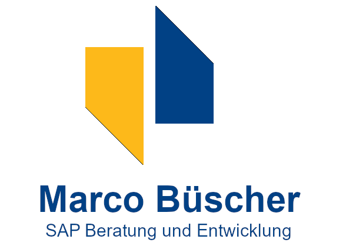

13.12.2019 SAP CodeJam Lingen SAVE THE DATE!
SAP CodeJam Lingen am 15.02.2019 "ABAP für SAP HANA"
Die ABAP Development Tools (ADT) für SAP NetWeaver, auch bekannt als "ABAP in Eclipse", sind die empfohlene IDE für die Entwicklung von ABAP-Anwendungen. Es ist ab SAP NetWeaver 7.31 SP4 verfügbar und lässt sich nahtlos in Ihre bestehenden ABAP-Entwicklungssysteme integrieren. In diesem CodeJam erhalten Sie eine Einführung in die leistungsstarken Werkzeuge des ADT und erfahren die Vorteile der Verwendung von ABAP in Eclipse für Ihre ABAP-Entwicklungen:
- ABAP-Projekte mit dem Project Explorer erstellen - Erfahren Sie, wie Sie Ihr erstes ABAP-Projekt erstellen und die Systemverbindung handhaben, auch für verschiedene ABAP-Systeme gleichzeitig.
- Suche nach ABAP-Entwicklungsobjekten - Erfahren Sie, wie Sie in Ihrem Projekt eine systemweite Suche nach ABAP-Entwicklungsobjekten durchführen können.
- Neue Objekte zum ABAP-Projekt hinzufügen - Erfahren Sie, wie Sie neue Entwicklungsobjekte wie ABAP-Klassen zu einem bestehenden ABAP-Projekt hinzufügen können.
- Verwendung der Umrandungsansicht - Machen Sie sich mit den Navigationsmöglichkeiten der Umrandungsansicht vertraut.
- Multi-Dokument Editor - Verschaffen Sie sich einen Überblick über den Quellcode-Editor für Multi-Dokumente und die Navigation zwischen den Editorfenstern.
- Verwendung von Code-Vervollständigung und Signaturvorlagen - Erfahren Sie, wie Sie Code-Vervollständigung und Signaturvorlagen verwenden können.
- Verwendung vordefinierter Quellcodevorlagen - Erfahren Sie, wie Sie vordefinierte Quellcodevorlagen erstellen und verwenden.
- Formatierung des Quellcodes - Erfahren Sie, wie Sie Ihren Quellcode formatieren.
- Refactoring - Lernen Sie, wie Sie Refactoring-Funktionen für Ihren Quellcode nutzen können.
- Navigieren im ABAP-Quellcode - Erfahren Sie, wie Sie durch Ihren Quellcode navigieren können.
- Verwendung des Verwendungsnachweises - Erfahren Sie, wie Sie die Vorteile des Verwendungsnachweises nutzen können.
- ABAP Unit Tests ausführen - Erfahren Sie, wie Sie ABAP Unit Tests für Ihre Entwicklungsobjekte durchführen können.
- ABAP Coverage ausführen - Erfahren Sie, wie Sie ABAP Coverage für Ihre Entwicklungsobjekte ausführen können.
- Profiling - ABAP-Profiling-Perspektive verwenden
- ABAP Dumps als Feeds erhalten - Abonnieren Sie ABAP Feeds, um ABAP-Laufzeitfehler und Kurzdumps anzuzeigen.
- Erfahren Sie, wie Sie den ABAP Debugger in den ABAP Development Tools einsetzen können.
- Erfahren Sie, wie Sie die neuen Entwicklungswerkzeuge für CDS-Views und Datenbankprozeduren einsetzen können.
Arbeiten mit ABAP-Projekten
ABAP-Quelltext bearbeiten
Navigation und Suche nach Entwicklungsobjekten
Quality Tools
Troubleshooting Tools
Debugger
Die ABAP Core Data Services (ABAP CDS)
Impressionen vom ersten SAP CodeJam Lingen
Sehen Sie hier unsere anderen SAP CodeJams:For inquiries or collaborations please contact me by email at info@buescher.org or fill out the form below.
Our Sponsors:
